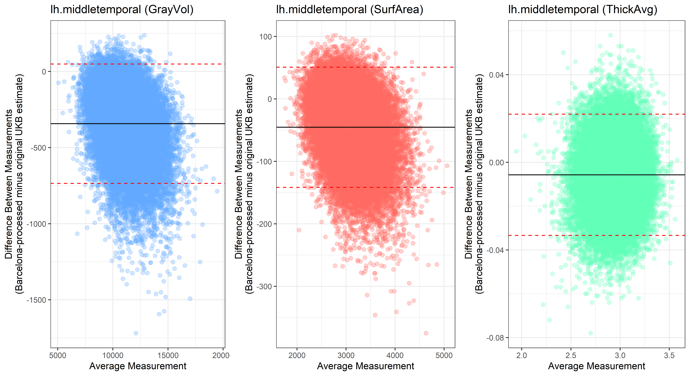
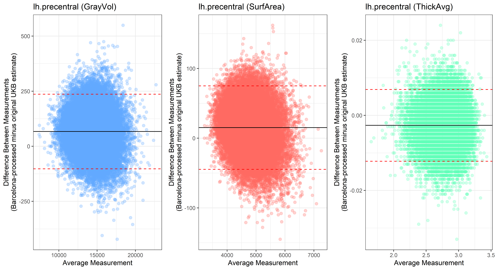

Validating barcelona script (.annot processing)
Here I test the Barcelona pipeline by processing Desikan-Killiany and comparing the output with the Desikan-Killiany anatomical stats as they are provided by UKB. To get a sense of the accuracy, I have processed all subjects with the lh.aparc.annot files (re-named it to lh.test.aparc.annot so that files stats files don’t overwrite each other).
Individual participants
# iterate through subjects
subjects <- read.table("/mnt/lustre/datasets/ukbiobank/ukb40933/imaging/output/error/download_success", header=F)
subjects <- as.vector(subjects$V1)
# only keep subjects that aren't duplicated
subjects <- subjects[!duplicated(subjects)]
names <- NULL
for(i in subjects){
# load file that holds all successful downloads
setwd(paste0("/mnt/lustre/datasets/ukbiobank/ukb40933/imaging/FS_processing/",i,"/stats"))
# read left stats file processed with Barcelona pipeline
lh.test.stats <- as.data.frame(read.table("lh.test.aparc.stats", sep="", skip=15))
names(lh.test.stats) <- c("test.NumVert","test.SurfArea","test.GrayVol","test.ThickAvg","ThickStd","MeanCurv","GausCurv","FoldInd","CurvInd","StructName")
# re-name StructName to know which hemisphere it belongs to
lh.test.stats$StructName<-paste0("lh.",as.character(lh.test.stats$StructName))
# read right stats file processed with Barcelona pipeline
rh.test.stats <- as.data.frame(read.table("rh.test.aparc.stats", sep="", skip=15))
names(rh.test.stats) <- c("test.NumVert","test.SurfArea","test.GrayVol","test.ThickAvg","ThickStd","MeanCurv","GausCurv","FoldInd","CurvInd","StructName")
# re-name StructName to know which hemisphere it belongs to
rh.test.stats$StructName<-paste0("rh.",as.character(rh.test.stats$StructName))
# rbind the two data.frames
test_aparc <- rbind(lh.test.stats[,c("StructName","test.NumVert","test.SurfArea","test.GrayVol","test.ThickAvg")], rh.test.stats[,c("StructName","test.NumVert","test.SurfArea","test.GrayVol","test.ThickAvg")])
# read left stats file as provided by UKB
lh.UKB.stats <- as.data.frame(read.table("lh.aparc.stats", sep=""))
# name columns
names(lh.UKB.stats) <- c("StructName","UKB.NumVert","UKB.SurfArea","UKB.GrayVol","UKB.ThickAvg","ThickStd","MeanCurv","GausCurv","FoldInd","CurvInd")
# re-name StructName to know which hemisphere it belongs to
lh.UKB.stats$StructName<-paste0("lh.",as.character(lh.UKB.stats$StructName))
# read right stats file as provided by UKB
rh.UKB.stats <- as.data.frame(read.table("rh.aparc.stats", sep=""))
# name columns
names(rh.UKB.stats) <- c("StructName","UKB.NumVert","UKB.SurfArea","UKB.GrayVol","UKB.ThickAvg","ThickStd","MeanCurv","GausCurv","FoldInd","CurvInd")
# re-name StructName to know which hemisphere it belongs to
rh.UKB.stats$StructName<-paste0("rh.",as.character(rh.UKB.stats$StructName))
# rbind the two data.frames
UKB_aparc <- rbind(lh.UKB.stats[,c("StructName","UKB.NumVert","UKB.SurfArea","UKB.GrayVol","UKB.ThickAvg")], rh.UKB.stats[,c("StructName","UKB.NumVert","UKB.SurfArea","UKB.GrayVol","UKB.ThickAvg")])
# merge test and UKB dataframes
aparc <- merge(test_aparc, UKB_aparc, by = "StructName")
# save aparc frame in files in case I want to revisit that
#write.table(aparc, paste0( "/mnt/lustre/datasets/ukbiobank/ukb40933/imaging/output/evalute_barcelona/table_aparc_ukb_test_barcelona",i))
# report extreme values of disagreement
for(j in c("NumVert","SurfArea","GrayVol","ThickAvg")){
test <- paste0("test.", j)
UKB <- paste0("UKB.",j)
#print(test)
#print(UKB)
aparc$diff <- abs(aparc[,test]- aparc[,UKB])
max_diff <- sort(aparc$diff)[(nrow(aparc)-3):nrow(aparc)]
#print(aparc[aparc$diff %in% max_diff,])
# it seems that different regions have bigger disagreement depending on the subject
# keep region names and see which ones come up often
names <- append(names,aparc$StructName[aparc$diff %in% max_diff])
}
#aparc$diff_NumVert <- abs(aparc$test.NumVert- aparc$UKB.NumVert)
#max_Numvert_diff <- sort(aparc$diff_NumVert)[(nrow(aparc)-3):nrow(aparc)]
#aparc[aparc$diff_NumVert %in% max_Numvert_diff,]
# plot results
png(paste0("/mnt/lustre/datasets/ukbiobank/ukb40933/imaging/output/",which(subjects == i),"_compare_aparc.png"), width = 8, height = 8, units = 'in', res=800)
grid <- par(mfrow=c(2, 2))
plot(aparc$test.NumVert, aparc$UKB.NumVert, xlim=c(280,14700),ylim = c(280,14700))
abline(a = 0,b = 1, col="red")
plot(aparc$test.SurfArea, aparc$UKB.SurfArea, xlim=c(190,10000),ylim = c(190,10000))
abline(a = 0,b = 1, col="red")
plot(aparc$test.GrayVol, aparc$UKB.GrayVol, xlim=c(650,33000),ylim = c(650,33000))
abline(a = 0,b = 1, col="red")
plot(aparc$test.ThickAvg, aparc$UKB.ThickAvg, xlim=c(1.4,4.1),ylim = c(1.4,4.1))
abline(a = 0,b = 1, col="red")
par(grid)
dev.off()
}
# table indicating how often an area was among the 4 most different regions within one subject
# the difference is calculates as abs(aparc$test.NumVert- aparc$UKB.NumVert) for Number of vertices for example
# most common ones: rh.insula, rh.fusiform, lh.superiortemporal,rh.lateraloccipital
table(names)Participant 1
Participant 2
Participant 3
## Participant 4
Participant 5
Participant 6
Participant 7
Participant 8
Participant 9
Participant 10
Bland-Altman plots
Looking at 10 subjects individually, the pipeline seems relatively reliable, and it doesn’t seem to produce results biased towards specific regions or only one hemisphere, but it’s hard to say from only 10 subjects. As we must use this pipeline to process Julich Brain and Yeo if we want to include them in the study, we will go ahead and process the data with the pipeline. To get a more reliable quantification of the performance of the pipeline, and to test more reliably whether using the Barcelona pipeline produced very different results, we have processed the DK atlas based on DK .annot files and compared the output with the DK measures provided by UKB in a Bland-Altman. There are many different patterns across the different regions. This suggests that estimates from the Barcelona pipeline differ from the original estimates, but those differences are at least not the same across all regions.
#load dependencies
library(ggplot2)
library(stringr)
library(cowplot)
setwd("C:/Users/k1894405/OneDrive - King's College London/PhD/Projects/Comparing labelling protocols/temp")
# iterate over GrayVol, SurfArea & AvgThick
iter = c("GrayVol", "ThickAvg", "SurfArea")
for(j in iter){
# read in data as formatted with combine_atlas_output.R
test_GrayVol <- read.table(list.files(pattern=paste0("test.aparc_",j)), header=T)
orig_GrayVol <- read.table(list.files(pattern=paste0("DK_",j)), header=T)
# test if column names are identical
if(sum(names(test_GrayVol) != names(orig_GrayVol))){print("Aparc test and original DK output differ in their included ROIs")}
# name columns unique to wether it's from test or orig
names(test_GrayVol)[2:length(names(test_GrayVol))] <- paste0("test_",names(test_GrayVol)[2:length(names(test_GrayVol))])
names(orig_GrayVol)[2:length(names(orig_GrayVol))] <- paste0("orig_",names(orig_GrayVol)[2:length(names(orig_GrayVol))])
#################################################
## Iterate through all ROIs
#################################################
ROIs <- str_remove(names(test_GrayVol)[2:length(names(test_GrayVol))], pattern="test_")
# make table to hold p-values from the variances ratio test
# we need 68 regions/ rows & 2 columns
table <- data.frame(matrix(nrow = 68, ncol = 2))
names(table) <- c("ROI", "p_value")
table$ROI <- ROIs
for(i in ROIs){
# create dataset for specific ROI
ROI_tested <- merge(test_GrayVol[,c("IID",paste0("test_",i))], orig_GrayVol[,c("IID",paste0("orig_",i))], by = "IID")
# remove missing datapoints
ROI_tested = ROI_tested[which(!is.na(ROI_tested$IID)),]
#create new column for average measurement
ROI_tested$avg <- rowMeans(ROI_tested[2:3])
#create new column for difference in measurements
ROI_tested$diff <- ROI_tested[,paste0("test_",i)] - ROI_tested[,paste0("orig_",i)]
#find average difference
mean_diff <- mean(ROI_tested$diff, na.rm = T)
#find lower 95% confidence interval limits
lower <- mean_diff - 1.96*sd(ROI_tested$diff, na.rm = T)
#find upper 95% confidence interval limits
upper <- mean_diff + 1.96*sd(ROI_tested$diff, na.rm = T)
# pick color depending on whether we're dealing with GrayVol, SurfArea or ThicAvg
if(j == "GrayVol"){pick_color = "#61a8ff"}
if(j == "SurfArea"){pick_color = "#ff6961"}
if(j == "ThickAvg"){pick_color = "#61ffb8"}
#create Bland-Altman plot
plot<-ggplot(ROI_tested, aes(x = avg, y = diff)) +
geom_point(size=2, alpha = 0.3, color=pick_color) +
geom_hline(yintercept = mean_diff) +
geom_hline(yintercept = lower, color = "red", linetype="dashed") +
geom_hline(yintercept = upper, color = "red", linetype="dashed") +
ggtitle(paste0(i, " (",j,")")) +
ylab("Difference Between Measurements\n(Barcelona-processed minus original UKB estimate)") +
xlab("Average Measurement")+
theme_bw()
assign(paste0("plot_",i,"_",j), plot)
}
}
for(i in ROIs){
png(paste0("C:/Users/k1894405/Documents/GitHub/Comparing_atlases/Bland_Altman/",i,"_Bland_Altman.png"), width = 11, height = 6, units = 'in', res=600)
plot_GrayVol = get(paste0("plot_",i,"_GrayVol"))
plot_SurfArea = get(paste0("plot_",i,"_SurfArea"))
plot_AvgThick = get(paste0("plot_",i,"_ThickAvg"))
print(plot_grid(plot_GrayVol, plot_SurfArea, plot_AvgThick, nrow = 1, ncol= 3))
dev.off()
}The equivalent plots for the right hemisphere can be found on Github.
lh.bankssts
lh.caudalanteriorcingulate
lh.caudalmiddlefrontal
lh.cuneus
lh.entorhinal
lh.fusiform
lh.inferiorparietal
lh.inferiortemporal
lh.isthmuscingulate
lh.lateraloccipital
## lh.lateralorbitofrontal
lh.lingual
lh.medialorbitofrontal
lh.insula

lh.middletemporal

lh.paracentral
## lh.parahippocampal
lh.parsopercularis
lh.parsorbitalis
## lh.parstriangularis ## lh.pericalcarine
lh.postcentral
lh.posteriorcingulate
lh.precentral

lh.precuneus
lh.rostralanteriorcingulate
lh.rostralmiddlefrontal
lh.superiorfrontal
lh.superiorparietal
lh.superiortemporal
lh.supramarginal
## lh.temporalpole
lh.transversetemporal

By Anna Elisabeth Fürtjes
anna.furtjes@kcl.ac.uk